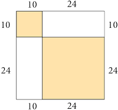
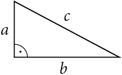

Példák
ézzünk meg néhány példafeladatot is, hogy könnyebb legyen megérteni, hogy is kell használni a tételt.
1. példa

Egy négyzet alakú szobában úgy terítettünk le egy kisebb négyzet alakú szőnyeget, hogy minden csúcsa a szoba egy-egy szélénél található. A szoba oldalai 34 deciméter szélesek. Minden sarokban egy-egy egybevágó derékszögű háromszög maradt takaratlanul, melynek befogói 24 deciméter és 10 deciméter hosszúságúak. Mekkora a szőnyeg területe? Mekkora a szőnyeg egy-egy oldalának hossza?
2. példa
Egy 34 deciméter oldalhosszúságú, négyzet alakú szobában két négyzet alakú szőnyeget terítettünk le az ábrán látható módon. A két téglalap alakú lefedetlen padlórész oldalai 24 deciméter és 10 deciméter hosszúságúak. Mekkora a két szőnyeg területe összesen? Hasonlítsuk össze ezt az előző példában látott nagy szőnyeg területével!
3. példa
Számítsuk ki a derékszögű háromszög hiányzó oldalhosszát!
Használjuk a Pitagorasz-tételt!
- a = 3 cm, b = 4 cm
- a = 5 cm, b = 7 cm
- a = 5 cm, c = 13 cm
- a = 10 cm, c = 21 cm
1. példa
Készítsünk vázlatrajzot a szöveg alapján! A szoba minden oldala 34 deciméter hosszú, ezért a területe: T = 342 = 1156 (dm2). Minden sarokban van egy-egy derékszögű háromszög alakú rész, amelyet nem fed a szőnyeg. Mivel ismerjük a befogók hosszát, ezért egy ilyen rész területe: t = 10⋅242=120 (dm2). Ezek alapján a szőnyeg területe: T - 4 ⋅ t = 1156 - 4 ⋅ 120 = 676 (dm2). A négyzet alakú szőnyeg oldalhosszát jelölje c - vel. Ebből következik, hogy a területe: c2=676. Tehát a szőnyeg oldalhossza: c = 26 dm.
2. példa
A négyzet alakú szőnyegek oldalhosszait ismerjük, ezért kiszámolhatjuk az együttes területüket: 102 + 242 = 676 (dm2). Megfigyelhető, hogy a kapott terület egyenlő az előző példában látott nagy szőnyeg területével.
Ez azonban nem meglepő! A szoba területéből két téglalap nincs szőnyeggel takarva. Ezek területe pontosan akkora, mint az előző példában látott négy derékszögű háromszög együttes területe. Vagyis mindkét esetben ugyanakkora részt takartunk le szőnyeggel.
3. példa
Számítsuk ki a derékszögű háromszög hiányzó oldalhosszát!
Használjuk a Pitagorasz-tételt!
- Mivel c2 = a2 + b2, ezért c2 = 32 + 42 = 25. Vagyis c = √25 = 5 (cm).
- Mivel c2 = a2 + b2, ezért c2 = 52 + 72 = 74. Vagyis c = √74 ≈ 8,6 (cm).
- Mivel c2 = b2 + b2, ezért c2 = 132 + 52 = 144. Vagyis c = √144 = 12 (cm).
- Mivel c2 = b2 + b2, ezért c2 = 212 + 102 = 341. Vagyis c = √341 ≈ 18,5 (cm).